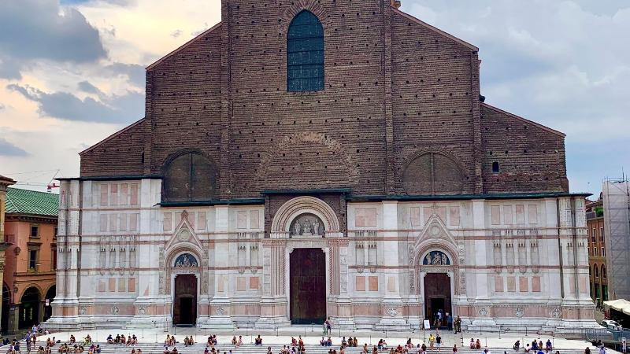
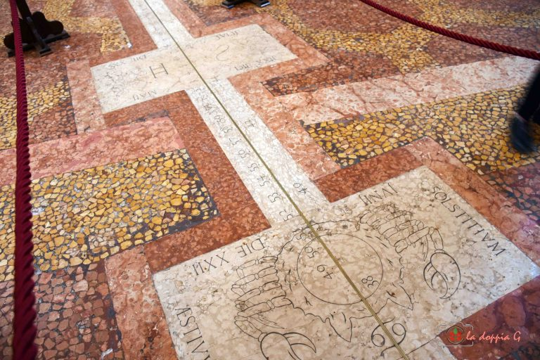
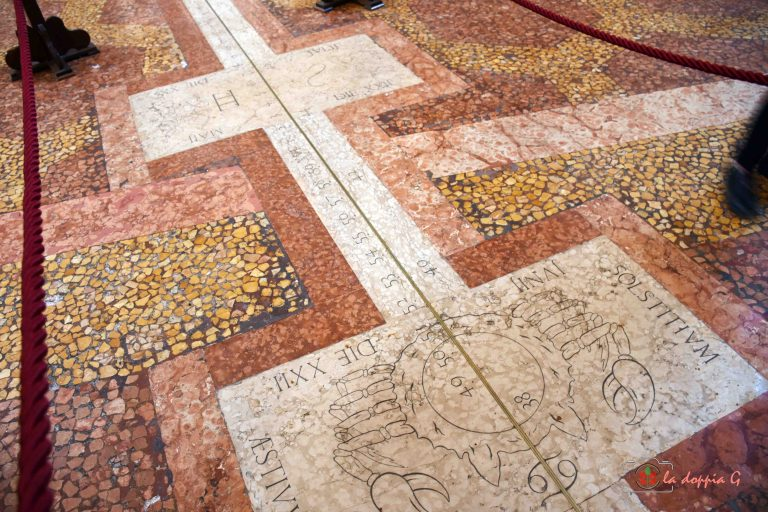
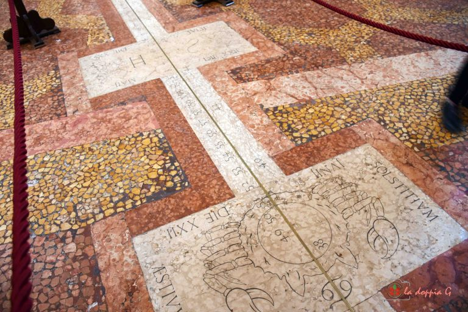
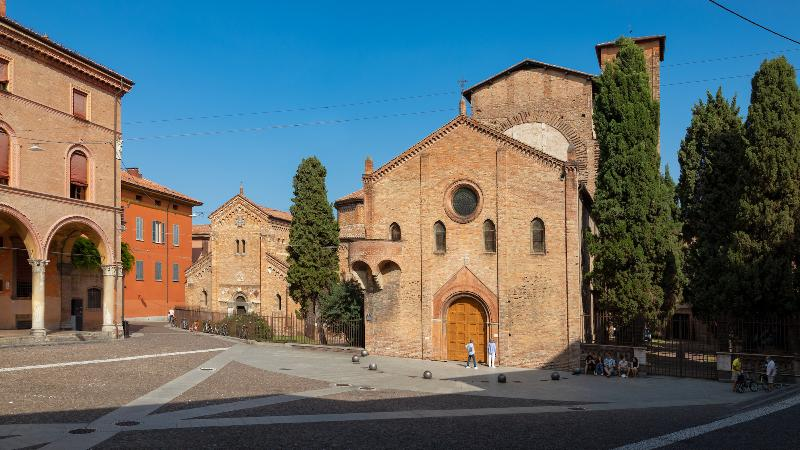
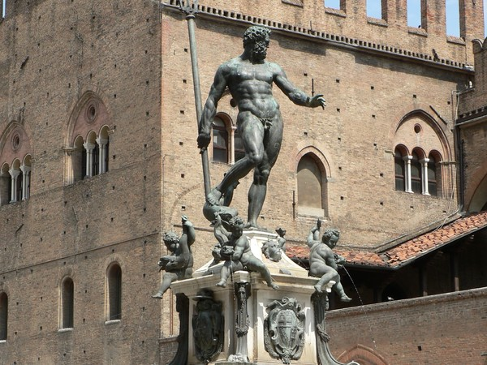

Basilica di San Petronio: L'Ambizione Interrotta

 


- Meridiana di Cassini: Strumento astronomico del 1655
- Cappella dei Re Magi con affreschi medievali
Santo Stefano: Gerusalemme Bolognese
- 7 chiese interconnesse con simbologia della Passione
- Cortile di Pilato: Vasca del XI secolo
Fontana del Nettuno: Simbolo di Potere
- Opera di Giambologna con allegorie dei continenti
- Restauro delle dorature originali